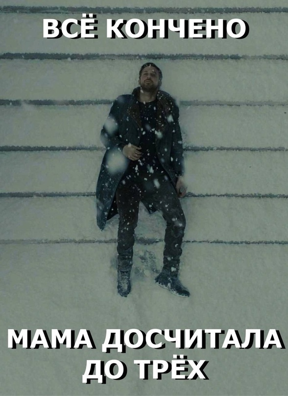

Когда мама досчитала до трёх
Основано на меме где Райан Гослинг из "бегущий по лезвию 2049" лежит на лестнице
Год создания: 2017
Оригинальное название: Райан гослинг лежит на лестнице
Теги #райангослинглежитналестнице #бегущийполезвию2049 #райангослинг
Оригинальное название: Райан гослинг лежит на лестнице
Теги #райангослинглежитналестнице #бегущийполезвию2049 #райангослинг
После того как в 2017 Райан Гослинг сыграл главную роль в сиквеле «Бегущего по лезвию»,он сразу стал героем мемов. Пользователи растащили фильм на множество но самыми популярными стали два — в одном из которых персонаж Гослинга лежит на ступеньках.